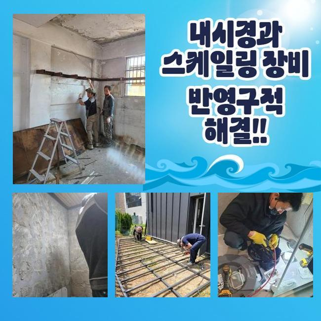
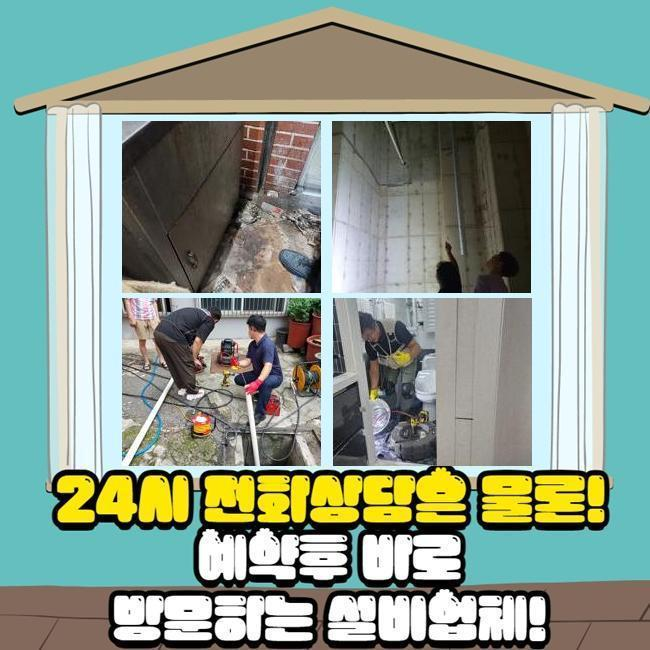
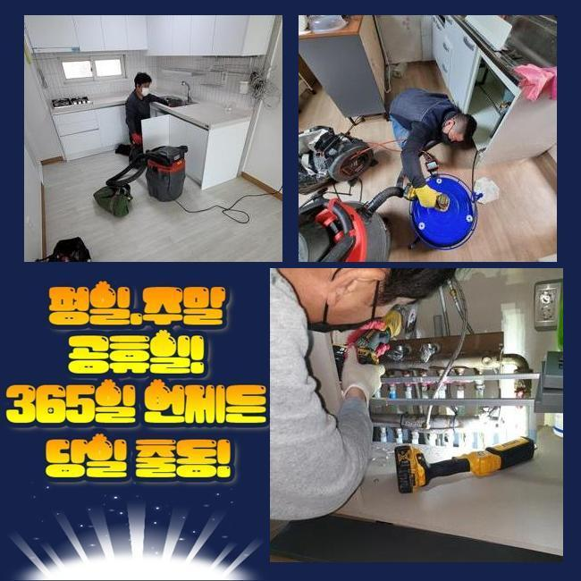
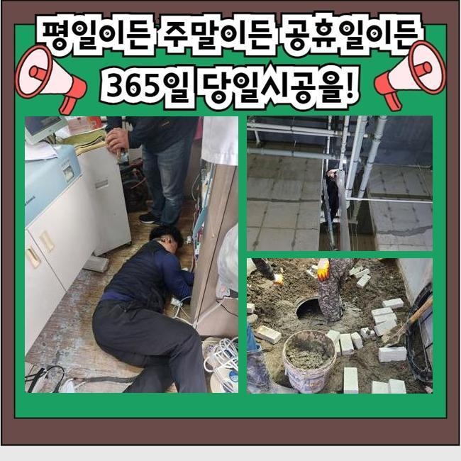

🏠 인천 만석동싱크대배수관막힘 금곡동 배관뚫기 수리업체
인천 싱크대막힘 전문 시공 후기

📋 작업 개요
- 위치: 인천
- 서비스 유형: 싱크대막힘, 하수구막힘, 배관막힘, 뚫는업체, 배관청소, 고압세척, 배관보수
- 작업 일시: 2025. 5. 9. 16:29
- 업체명: 하수구수사대 (010-5615-2118)
🔍 문제 상황
인천 만석동싱크대배수관막힘 금곡동 배관뚫기 수리업체
여러 활동으로 물을 활용하면 다수의 원인으로 인해 하수구에 불순한 물질들이 집적될 수 있어요
침전물이 덩어리가 되면 뻑뻑한 밀집도로 건조되어지므로 꿈쩍도 하지 않아요
강력하게 결합되어 있는 이물질을 강제로 떼려고 배관에 무리를 주다가는 배관 자체가 데미지를 입는 악화된 모습을 마주하게 됩니다
문제점이 선명하게 보이는 그러한 상황이라고 해도 전문성있는 약품과 도구를 조화롭게 선택해서 시공해야만 작은 오류도 남기지 않은 채로 배수관을 만들 수 있어요
자가 조치로 뚫어보려고 하더라도 전체적인 문제를 전부 포착하긴 힘들며 이렇다할 변화가 없을 수 있어요
이번에 갔던 곳은 한 가정이 거주하고 계셨는데 오염된 물이 밀려와서 실내가 지저분해져서 일상생활이 안 된다며 요청해 주셨습니다
급한 상태임을 반영해서 시공에 적용할 장치를 갖고 황급히 내방을 드렸습니다
걸음을 재촉해서 어떤 상황인지 살펴보니 바닥의 배수구에서 심지어 물이 솟구치는 모습이 보였습니다
문제를 발견하자마자 가루와 액체로 된 세척제를 넣어 여러모로 힘써 보았지만 극명하게 좋아지지는 않고 변화가 없었다고 합니다

🔎 원인 분석
💡 전문가 진단: 정밀 진단 장비를 사용하여 슬러지의 고착 여부를 판명하고 타격/세척 작업을 실시했습니다.
속의 하수도 치고올라오니 악취까지 상당해서 활동하는데 있어서 스트레스 받고 계신다고 하셨어요
하수구 고장을 확실하게 없애서 재발이 없게끔 하려면 어떤 것이 원인이 되어 이러한 막힘 증세가 도래한 것인지 분명한 세부 정보를 얻어야 합니다
정확도를 높이고자 누락없이 챙겨온 내시경을 우선 배치하여 관로 안을 분석했는데요
조금씩 이동하며 스크린을 주시하면서 무슨 문제인지 판별해 보았더니 일부의 배관 구간에서 유분이 꽉 차게 모인 대상물이 주범이라고 결론 내릴 수 있었어요
이처럼 강력하게 결합한 유지방 덩이를 힘 줘서 떨어뜨리려고 한다면 배관에 크고작은 생채기가 일어날 위험성이 도사리고 있습니다
그러므로 적정 강도로 없애주는 기구를 동원하는 것이 현명한 처사입니다
내시경 조사를 하며 파악한 세부 사항을 고객님께 구체적으로 말씀 드린 다음 클리닝에 특화된 장비들을 별도로 작동해 주었습니다
고압수를 쏘는 청소가 수행됐으며 웬만큼 세척이 됐을 때 다시금 한번 내시경이 비춰주는 화면을 보며 진행도를 살폈습니다
꿈쩍 않던 하수가 움직이는 것을 보았으나 아직까지는 제거작업이 더 들어가야 했으므로 계속해서 진행하는 중이던 정화 활동을 지속했습니다
통수를 가로막던 유지방이 풀리고 물길이 뚫렸다는 것을 확증을 얻고 나서 작업을 마무리 짓게 되었습니다

🔧 작업 과정
정말 끝으로 내시경 작업이 끝난 곳을 체크하니 가득 끼어있던 기름층들이 소거 처리가 완료돼서 배수로가 깔끔하게 정리된 상태임을 알게 됐습니다
배관 속 다양한 위치에서 오랫동안 눌어붙어 있었던 기름 덩어리들이 인상적일 정도였지만 다른 세부적인 기기들을 별도로 쓰지 않고도 내부 정화가 완수되어서 시공이 빨리 끝났습니다
만일 이와 같은 슬러지가 아니고 대형 석회물질로 인해서 문제가 일어났다면 단순한 하나의 작업으로는 끝내기 힘들어요
커다란 석회 침전물이 통로를 가로 막고 있으면 본 세정작업에 착수하기 전에 물성이 충분히 연화되도록 제제를 주입해야 합니다
묽게 만드는 액상을 넣은 뒤에 관찰하면 거품이 부풀어 오르는데 여기서 수돗물을 붓고 희석시켜 주면 화학 반응이 일어나면서 치우기 쉽게 묽어집니다
하수구 석회 분해제는 전문가가 아니라면 구하기가 어려우니 막힘이 심하다는 걸 인지하셨으면 혼자가 아닌 전문공에게 의뢰를 해야 말끔하게 해결될 것입니다
간단해 보이는 클리너만으로 통수를 내보려는 상황이 있는데 석회때문에 생긴 상황 속에서는 클리너만 써서는 미처 해결하지 못해요
막힘이 형성되는 것은 짐작하기 힘들기 때문에 큰 고민없이 뚫으려 하지 않고 먼저 내시경을 안으로 넣어서 오염된 측면들을 모두 검토해야만 시원스럽게 배수구를 회복시킬 수 있습니다
도구 없이 봐서는 자잘한 가지배관이 모이는 배수로 전체를 식별하기 복잡합니다
내시경의 기능을 이용해서 내측을 살펴보는 단계가 토대가 되어야 할 것입니다
막힘이 생겨버리는 건 며칠만에 생기는 현상이 아니고 오래 시설이 작동하면서 먼지나 유분기가 지속적으로 누적되다가 단단한 구조물로 진화할 수 있습니다
하수가 고일 때에 앞서서 수시로 관리를 하는 것이 바람직한데 예를 들면 규칙적으로 온기가 있는 물을 배수관 안으로 부음으로써 뭉쳐있는 노폐물 덩어리가 휩쓸려 갈 수 있도록 한번씩 풀어주면 좋아요
사실 초반부터 찌꺼기가 깊숙이 자리하지 않도록 미세한 그물이나 필터를 설치하는 것이 훌륭한 방법이기도 해요
일반 빌라 아파트나 공공 건물 등 어디든 어떤 용도로든 물을 쓴다면 피할 수 없는 배수 장애 사안과 마주할 수 있어요
초반에 막히는 모습을 알아챘다면 빨리 움직여서 더 꼬이기 전에 올바른 작업이 이뤄져야 할 것입니다
막힘이 심화되다보면 잔수가 역 배출되어서 부패한 냄새까지 위협하는 난항을 겪을 수 있으니까요


✅ 작업 완료
견디지 못한 관로에 균열이 생기면 아랫집까지도 손실이 적용될 수 있고 이웃의 문제를 개선하기 위한 비용마저 자신이 부담해야 할 수 있거든요
그러니 막힘이 생기지 않게끔 유지 보수를 주의해서 하셔야 부담이 적을 겁니다
철두철미하게 하수구 이용 절차를 지켜도 잘 쓰다가도 갑작스레 막힘이 필연적으로 생길 때가 있습니다
물리적으로 뚫으려하기 보다는 저희 측에 하수 시스템의 수리를 요청주시면 됩니다!


⚠️ 주방 싱크대 배관 막힘 예방 수칙
- ✅ 기름기가 묻은 식기나 프라이팬은 설거지 전 키친타올로 반드시 기름때를 닦아내세요.
- ✅ 주기적으로 싱크대 개수대에 뜨거운 물을 가득 받아 한 번에 내려 배관 내부 기름을 씻어내세요.
- ✅ 배수구 거름망을 미세한 필터로 사용하시고 음식물 찌꺼기가 틈으로 새어 들지 않게 관리하세요.
- ✅ 베이킹소다와 식초를 뜨거운 물과 함께 일주일에 한 번씩 부어주면 배관 살균과 막힘 예방에 좋습니다.
💡 핵심 정리
- 확실한 장비 작업(내시경 점검 및 샤프트 스케일링)으로 원인을 뿌리 뽑습니다.
- 작업 후 1년 이내에 동일한 부위 재발 시 100% 무상 A/S 서비스를 보장합니다.
- 서울 · 경기 · 인천 전 지역에 24시간 언제든 긴급 출동할 수 있도록 항시 대기 중입니다.
❓ 자주 묻는 질문 (FAQ)
🚨 인천 싱크대막힘 문제로 고민이신가요?
정확한 원인 진단과 확실한 시공으로 재발 없는 해결을 약속드립니다.
24시간 긴급 출동 | 서울 · 경기 · 인천 전지역 | 1년 내 재발 시 무상 A/S